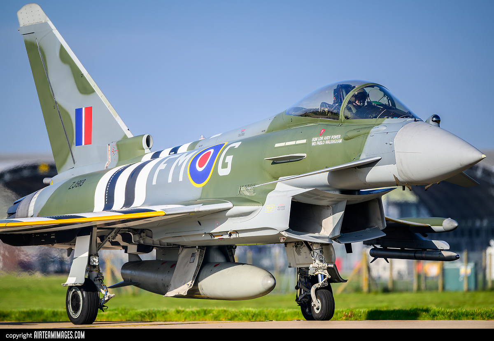

The Eurofighter Typhoon is a European multinational twin-engine, supersonic, canard delta wing, multirole fighter.The Typhoon was designed originally as an air-superiority fighter and is manufactured by a consortium of Airbus, BAE Systems and Leonardo that conducts the majority of the project through a joint holding company, Eurofighter Jagdflugzeug GmbH.
The NATO Eurofighter and Tornado Management Agency, representing the UK, Germany, Italy and Spain, manages the project and is the prime customer. The Eurofighter Typhoon is a highly agile aircraft, designed to be an effective dogfighter in combat, Later production aircraft have been increasingly better equipped to undertake air-to-surface strike missions and to be compatible with an increasing number of different armaments and equipment, including Storm Shadow, Brimstone and Marte ER missiles.
The Typhoon had its combat debut during the 2011 military intervention in Libya with the UK's Royal Air Force (RAF) and the Italian Air Force, performing aerial reconnaissance and ground-strike missions. The type has also taken primary responsibility for air-defence duties for the majority of customer nations.
